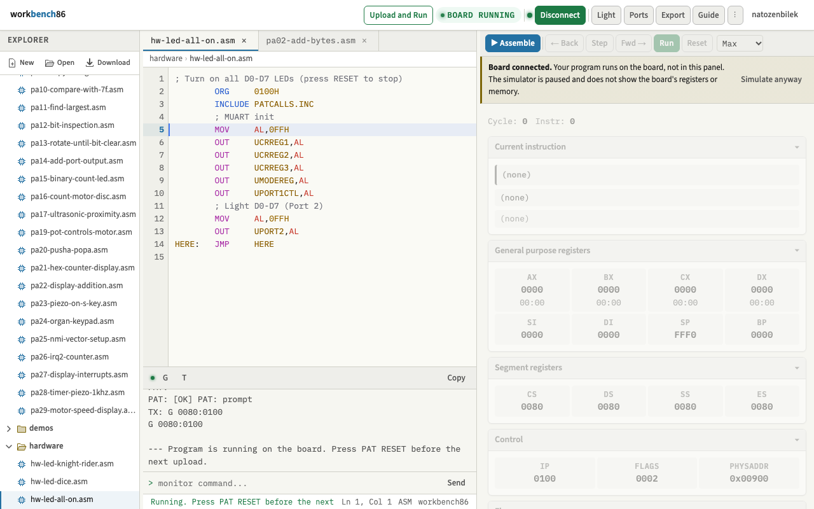
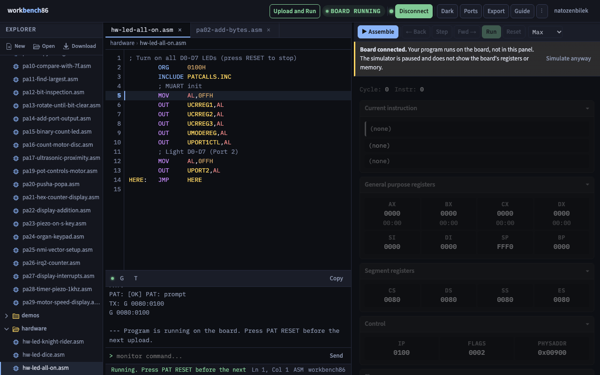
workbench86
Nasıl kullanılır
Tarayıcıda 8086 simülatörü ve DIGIAC 2000 kartına yükleme
v19
workbench86
How to use
An 8086 simulator in the browser, with upload to the DIGIAC 2000 board
v19
Bu sayfanın sonunda
Kodunuzu simülatörde ayıklayıp karta yükleyecek, karttan gelen her satırı okuyabileceksiniz.
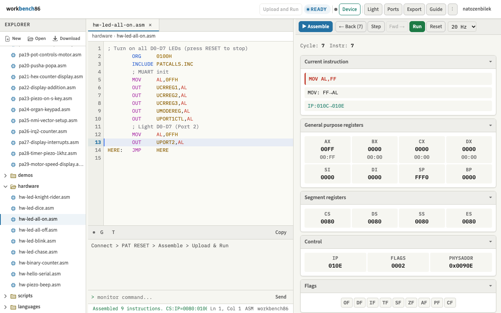
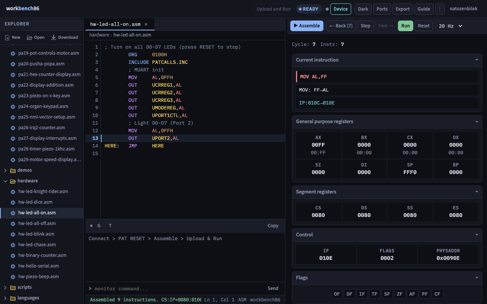
Upload and Run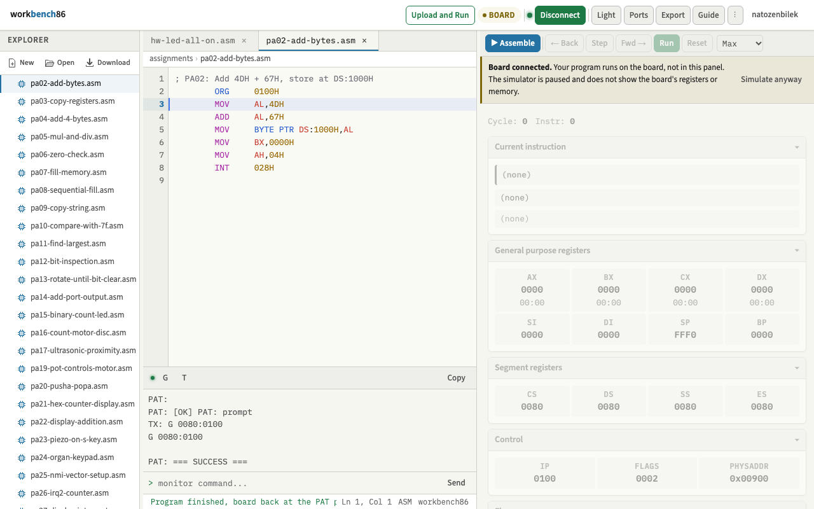
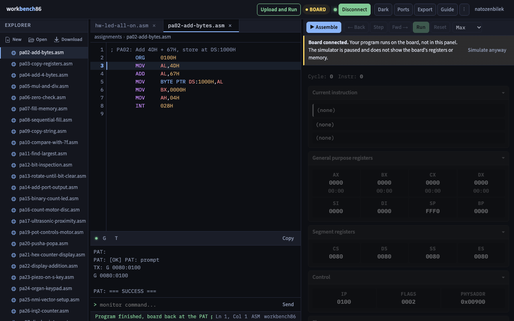
By the end of this page
You will debug in the simulator, upload to the board and read every line it sends.
Upload and RunSayfadan karta giden yol
- 1Seri iletim ve RS-232
- 2Simülatörde çalışma
- 3Karta yükleme
- 4Kart modu ve hata kodları
- 5Önce simülatör, sonra kart
From the page to the board
- 1Serial communication and RS-232
- 2Working in the simulator
- 3Uploading to the board
- 4Board mode and error codes
- 5Simulator first, then the board
1Seri iletim ve RS-232
Sayfa ile kart tek bir seri hat üzerinden konuşur.
1Serial communication and RS-232
The page and the board talk over a single serial line.
RS-232 (1960)
RS-232 ilk kez 1960'ta yayımlandı.
Bugün hala CNC tezgahlarında, laboratuvar cihazlarında ve sunucu konsollarında çalışıyor.
RS-232 (1960)
RS-232 was first published in 1960.
It still runs machine tools, lab gear and server consoles.
Seri ve paralel iletim
Seri iletimde bitler tek telden, sırayla gider.
Paralelde her bitin kendi teli vardır.
Serial and parallel
Serial sends the bits one by one over a single wire.
Parallel gives every bit its own wire.
TX, RX ve GND (1)
Bir tarafın TX'i (gönderme) öbür tarafın RX'ine (alma) bağlanır.
GND (toprak) iki tarafın ortak sıfırıdır.
TX, RX and GND (1)
One side's TX (transmit) goes to the other side's RX (receive).
GND (ground) is the shared zero.
TX, RX ve GND (2)
Diyafonda kapıdaki mikrofon yukarıdaki hoparlöre gider; TX de karşının RX'ine.
TX, RX and GND (2)
An intercom wires the door's mic to the speaker upstairs, just as TX goes to RX.
Baud
9600 baud, saniyede 9600 bit demektir.
Bir bit yaklaşık 104 mikrosaniye sürer.
Baud
9600 baud means 9600 bits per second.
One bit lasts about 104 microseconds.
Baudot kodu (1870'ler)
Baud adını Fransız telgraf mühendisi Émile Baudot'dan alır.
Kodu her harfi beş birimle gönderiyordu.
The Baudot code (1870s)
Baud is named after Émile Baudot, a French telegraph engineer.
His code sent every letter as five units.
Frame (çerçeve)
Her karakter bir frame içinde gider.
8N2'de 8 data bit, 2 stop bit var, parity (kontrol biti) yok.
Frame
Every character travels inside a frame.
8N2 has 8 data bits, 2 stop bits and no parity.
Start bit
Start bit alıcının saatini her karakterde yeniden başlatır.
Gözetmenin "Başlayabilirsiniz" demesi gibi.
Start bit
Each start bit resets the receiver's clock.
Like a proctor saying "You may begin."
Stop bit
İki stop bit, karakterden sonra kısa bir ara bırakır.
Dikte yaptıran öğretmenin kelime arasında beklemesi gibi.
Stop bit
Two stop bits put a short pause after each character.
Like the pauses in a dictation.
P harfi hatta
P'nin 11 biti yaklaşık 1,146 ms sürer.
Saniyede yaklaşık 872 karakter gider.
The letter P on the line
P's 11 bits take about 1.146 ms.
That is about 872 characters a second.
Teletype Model 33 (1963)
Bizim 11 bitlik frame'imiz Teletype Model 33'ünkiyle aynı uzunlukta.
| hız | saniyede | |
|---|---|---|
| Teletype Model 33 | 110 baud | 10 karakter |
| DIGIAC 2000 | 9600 baud | 872 karakter |
Teletype Model 33 (1963)
Our 11-bit frame is exactly as long as the Teletype Model 33's.
| speed | per second | |
|---|---|---|
| Teletype Model 33 | 110 baud | 10 characters |
| DIGIAC 2000 | 9600 baud | 872 characters |
RS-232 voltajları
RS-232'de 1 eksi voltaj, 0 artı voltajdır.
-3 ile +3 V arası geçersizdir.
RS-232 voltages
On RS-232, 1 is a negative voltage and 0 a positive one.
-3 to +3 V is invalid.
USB-RS232 çevirici (1)
Laptopta RS-232 portu yok; çevirici USB'yi RS-232'ye çevirir.
Sürücüsü yoksa tarayıcının port listesi boş gelir.
USB-RS232 converter (1)
The converter turns a laptop's USB into RS-232.
No driver means an empty port list.
USB-RS232 çevirici (2)
Çevirici, telefondakini dedeye yüksek sesle aktaran torun gibidir.
Sözü dedenin anlayacağı hale getirir.
USB-RS232 converter (2)
The converter acts like a grandchild relaying a call to Grandpa.
Grandpa hears it plainly and loudly.
2Simülatörde çalışma
Kodunuz önce kart olmadan, simülatörde çalışır.
2Working in the simulator
Your code runs in the simulator first, with no board at all.
Ekranın bölümleri
Simülatör her tarayıcıda çalışır; karta yükleme için Chrome ya da Edge önerilir.
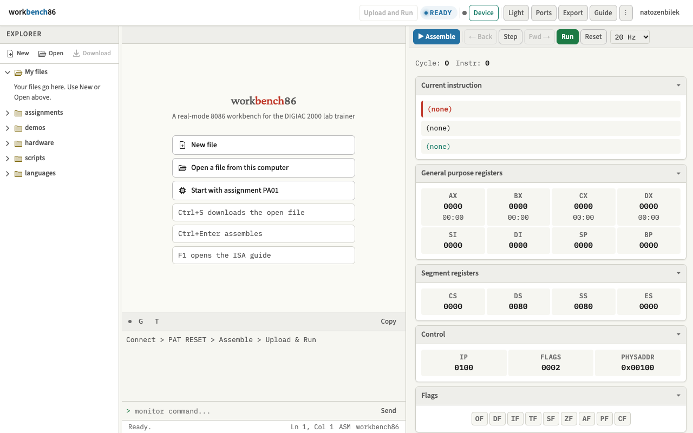
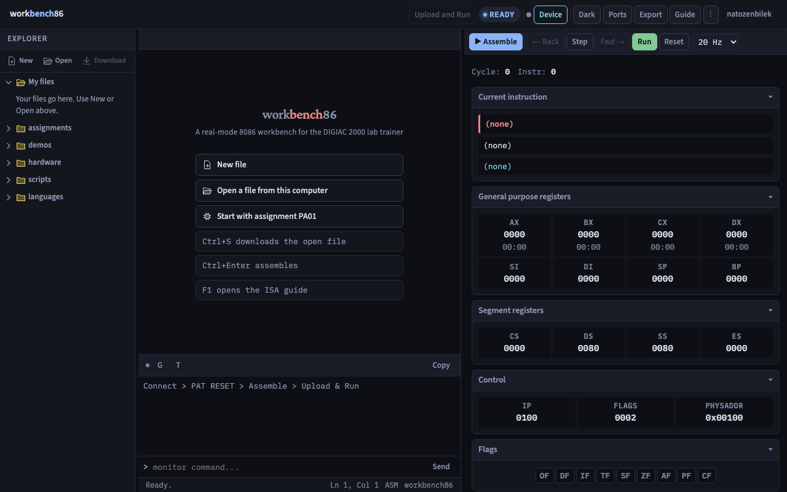
- 1Explorer
- 2Editör
- 3Terminal
- 4Durum çubuğu
- 5Simülatör paneli
- 6Upload and Run ve Device
The parts of the screen
The simulator runs in any browser; for uploading, Chrome or Edge is recommended.
- 1Explorer
- 2Editor
- 3Terminal
- 4Status bar
- 5Simulator panel
- 6Upload and Run and Device
Explorer
8086 örnekleri dört klasörde durur.
assignments, demos, hardware, scripts
languages'ta başka dillerde örnekler, My files'ta kendi dosyalarınız var.
- 1hardware klasörü
- 2hw-led-all-on.asm
- 3açık sekme
- 4dosyanın yolu
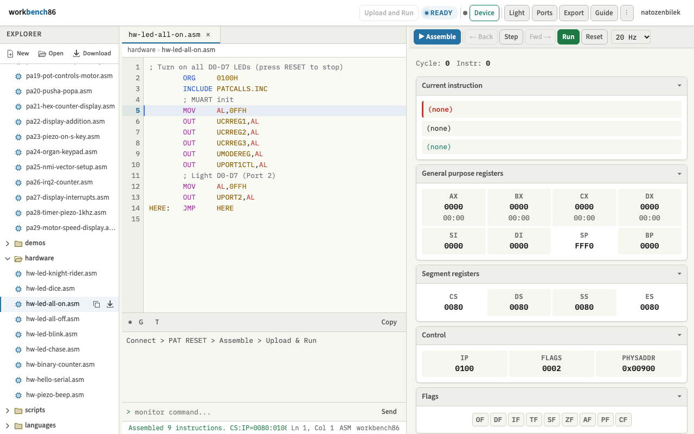
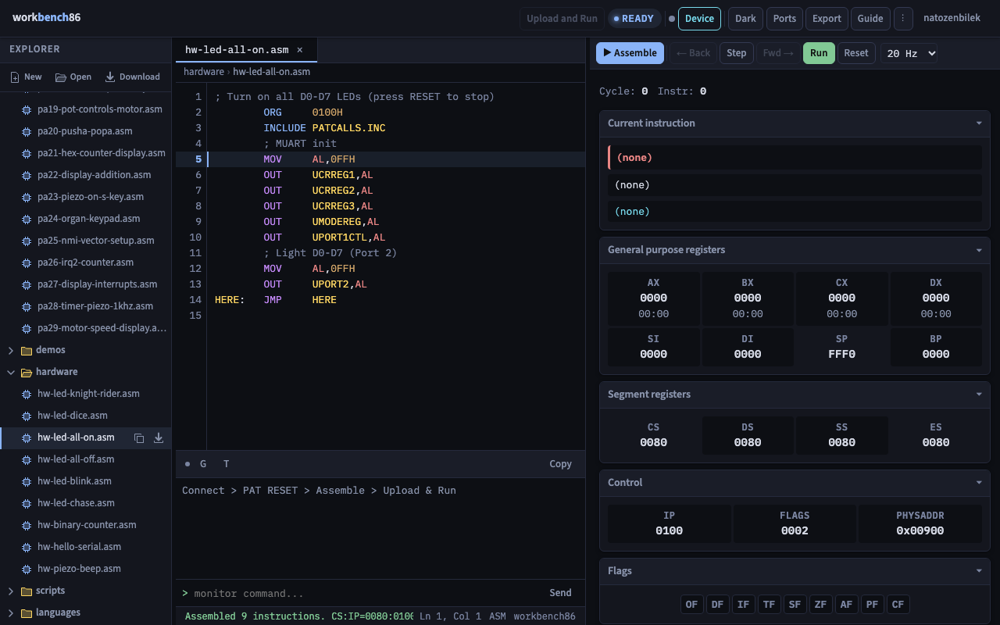
Explorer
The 8086 examples sit in four folders.
assignments, demos, hardware, scripts
languages holds other languages; My files holds your own.
- 1hardware folder
- 2hw-led-all-on.asm
- 3open tab
- 4file path
Assemble
Ctrl+Enter kodu derler; hata satır numarasıyla gelir.
- 1hata şeridi
- 2hatalı satır
- 3durum çubuğu
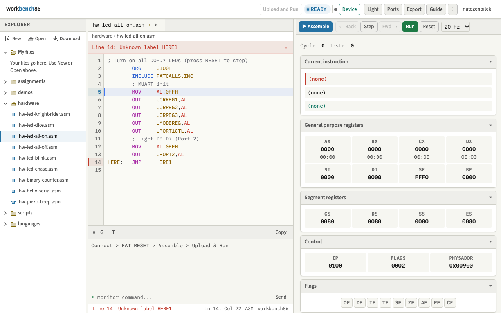
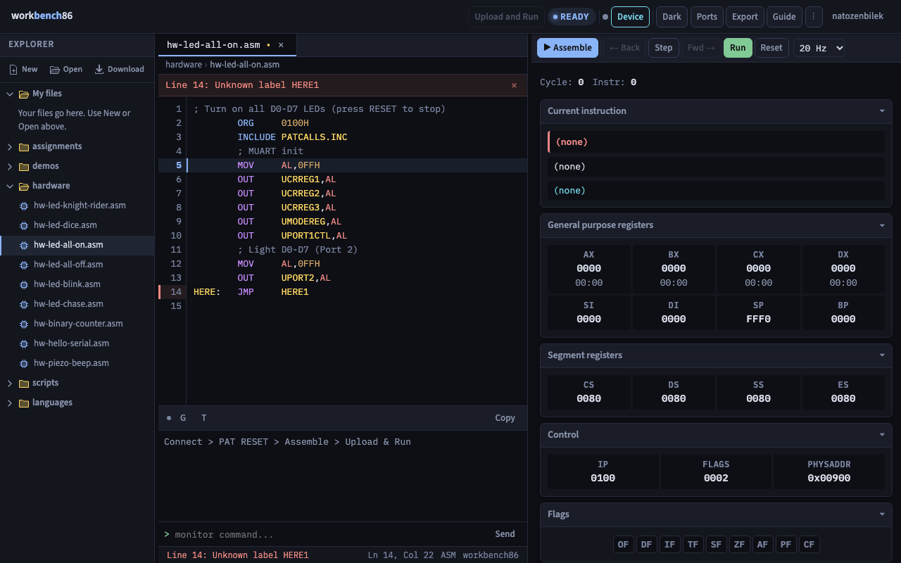
Assemble
Ctrl+Enter assembles the code; errors come with a line number.
- 1error banner
- 2the line with the error
- 3status bar
Step ve Back
Step bir komut ilerletir, ← (Back) bir komut geri alır.
- 1Step
- 2sıradaki satır
- 3Current instruction
- 4AX
- 5IP
Step and Back
Step runs one instruction; ← (Back) undoes one.
- 1Step
- 2next line
- 3Current instruction
- 4AX
- 5IP
Hız menüsü
Timer ya da WTNMS kullanan programlar Max hızda çalıştırılır.
Simülatördeki timer zamanı değil, komutları sayar.
- 1hız menüsü
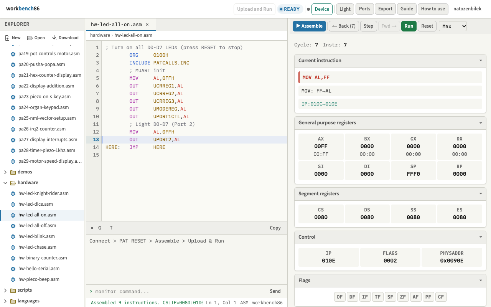
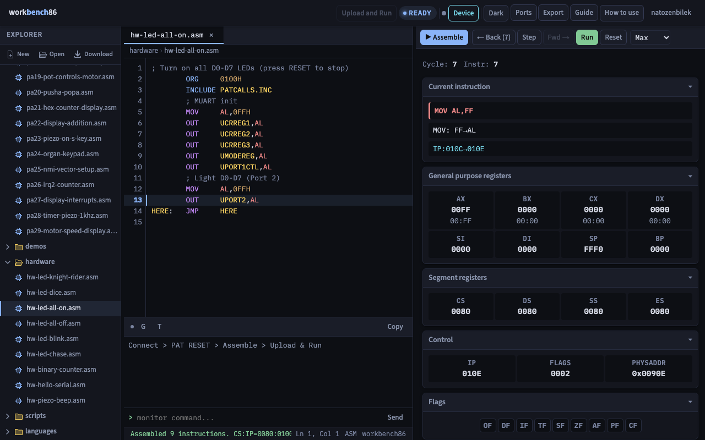
Speed menu
Programs that use the timer or WTNMS belong at Max speed.
The simulator's timer counts instructions, not time.
- 1speed menu
Kaydetme (1)
Download ya da Ctrl+S kodu .asm dosyası olarak indirir.
Dosyalarınız bu tarayıcıda da saklanır, ama yalnızca bu bilgisayarda.
- 1Download
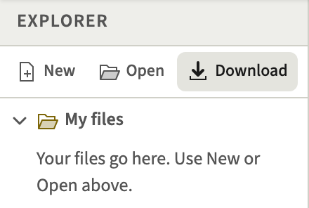
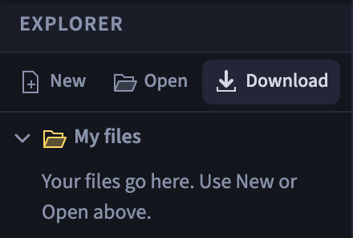
Saving (1)
Download or Ctrl+S saves your code as an .asm file.
Your files also stay in this browser, but only on this computer.
- 1Download
Kaydetme (2)
Ctrl+S, nöbetçi silmeden tahtanın fotoğrafını çekmek gibidir.
Saving (2)
Ctrl+S is like photographing the board before the next teacher wipes it.
3Karta yükleme
Kart bağlanınca aynı kod tek düğmeyle karta gider.
3Uploading to the board
Once the board is connected, one button sends the same code to it.
Device ve port seçimi
Device'a basınca tarayıcının port listesi açılır; çeviricinin portunu seçersiniz.
Device Chrome ve Edge'de denendi.
- 1Upload and Run
- 2durum etiketi
- 3Device
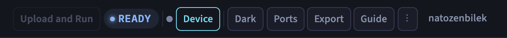
Device and the port
Device opens the browser's port list; you pick the converter's port.
Device is tested in Chrome and Edge.
- 1Upload and Run
- 2status label
- 3Device
Bağlantı kuruldu
Bağlanınca PAT: kendiliğinden gelmez; terminal PAT RESET'e basmanızı ister.
- 1Disconnect
- 2BOARD
- 3
Connected. Press PAT RESET, wait for "PAT:" prompt, then use buttons. - 4PAT RESET sonrası
[FF]vePAT: - 5Board connected (9600 8N2)
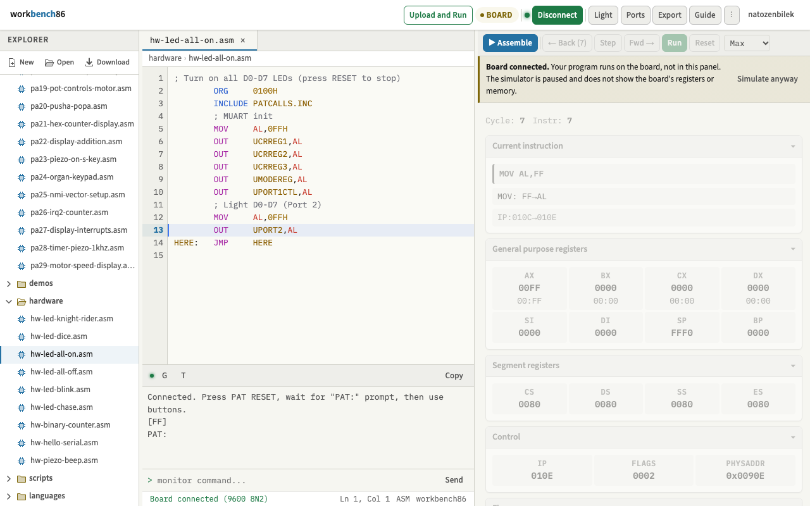
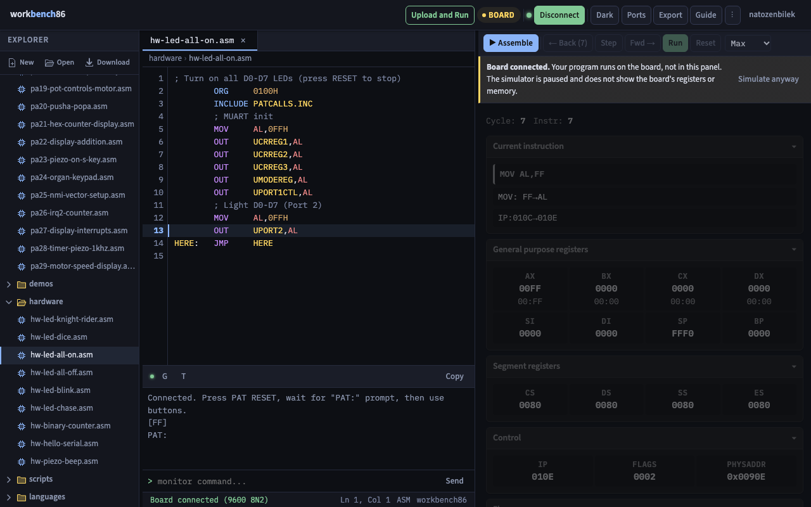
Connected
Connecting does not bring up a PAT: by itself, so the terminal asks for PAT RESET.
- 1Disconnect
- 2BOARD
- 3
Connected. Press PAT RESET, wait for "PAT:" prompt, then use buttons. - 4
[FF]andPAT:after PAT RESET - 5Board connected (9600 8N2)
Prompt (istem)
PAT:, kartın ROM'undaki monitor programının komut beklediğini gösterir.
Bakkalın "Buyrun?" demesi gibi.
The prompt
PAT: means the ROM's monitor program is waiting for a command.
Like a shopkeeper's "What can I get you?"
Woz Monitor (1976)
Apple I'in Woz Monitor'ü de RESET'ten sonra \ yazıp komut beklerdi.
256 byte'lık bir ROM programıydı.
Woz Monitor (1976)
After RESET, the Apple I's Woz Monitor printed \ and waited.
It was a 256-byte ROM program.
Döngüyle biten program
Böyle bir program kartta dönmeye devam eder ve sayfayı duymaz.
HERE: JMP HEREA program that ends in a loop
Such a program keeps running and never hears the page.
HERE: JMP HEREPAT RESET
Her yüklemeden önce PAT RESET.
PAT RESET kartı monitor programına döndürür; yeni bir PAT: gelir.
PAT RESET
PAT RESET before every upload.
It returns the board to the monitor; a fresh PAT: appears.
Upload and Run
Upload and Run tek basışta derler, karta yazar ve çalıştırır.
Derleme hatası varsa karta hiçbir şey gitmez.
- 1
Uploading 6/14 - 2UPLOADING
- 3terminal akışı
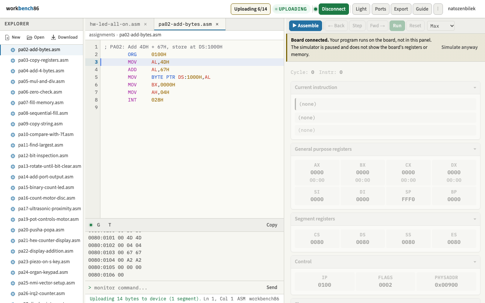
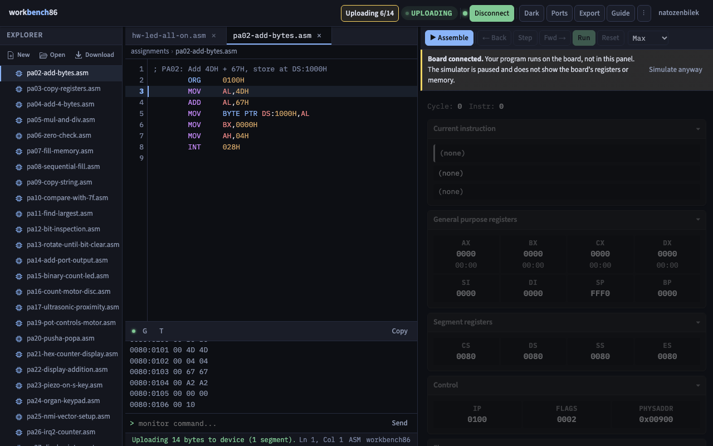
Upload and Run
One press assembles, writes to the board and runs.
Code that fails to assemble never reaches the board.
- 1
Uploading 6/14 - 2UPLOADING
- 3terminal output
Yüklemenin adımları
Sayfa her adımda kartın cevabını bekler.
The steps of an upload
At every step the page waits for the board's reply.
Ekrandaki eski PAT:
Ekrandaki eski PAT: kartın hazır olduğunu göstermez.
Sayfa 2 saniye içinde yeni bir PAT: bekler.
The old PAT: on screen
An old PAT: on screen proves nothing.
The page waits 2 seconds for a fresh PAT:.
C komutu
C 0080:0100, kartın belleğine o adresten yazmaya başlar.
Sonra her byte kendi satırında, iki hex rakam olarak gider.
- 1yükleme başlığı
- 2
TX: C 0080:0100
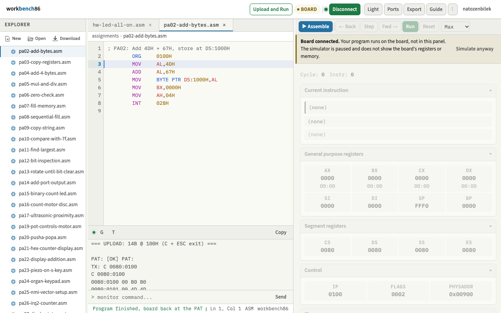
The C command
C 0080:0100 starts writing to memory at that address.
Each byte follows on its own line, as two hex digits.
- 1upload header
- 2
TX: C 0080:0100
Segment ve offset
0080:0100 = 0080h × 16 + 0100h = 00900h
Segment kartta 0080'dir; offset (segment içindeki uzaklık) programınızın ORG'udur.
Segment and offset
0080:0100 = 0080h × 16 + 0100h = 00900h
On the board the segment is 0080; the offset is your program's ORG.
Birden çok ORG
Her ORG bloğu ayrı bir C komutuyla gider; aradaki boşluk gönderilmez.
Several ORGs
Each ORG block gets its own C command; gaps are not sent.
G komutu ve üç sonuç
G 0080:0100 programı başlatır; sayfa 8 saniye PAT: bekler.
The G command and three outcomes
G 0080:0100 starts the program; the page waits 8 seconds for PAT:.
Error U01
Önceki program hala çalışıyorsa kart Upload'a cevap vermez.
Her yüklemeden önce PAT RESET.
- 1hata şeridi
- 2
[WARN] No PAT: prompt.ve[Error U01] - 3BOARD RUNNING
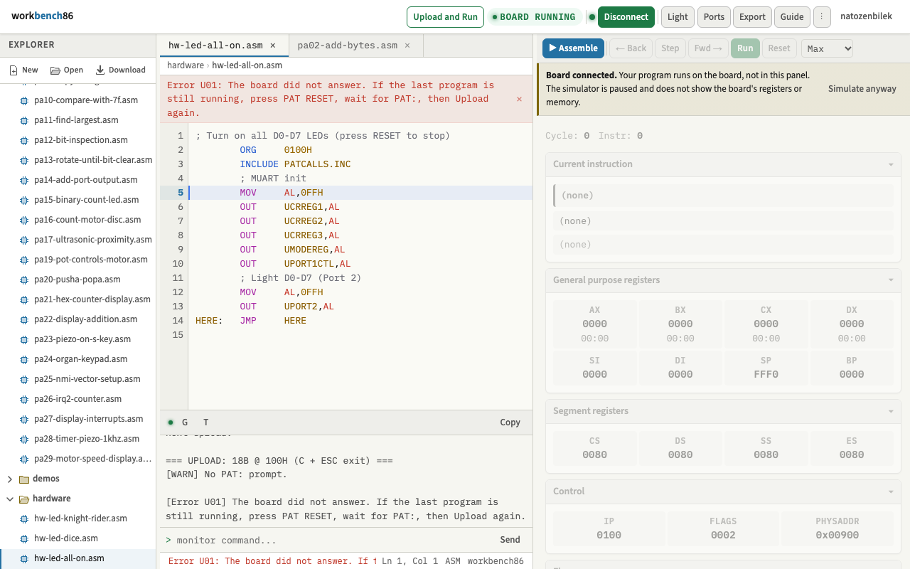
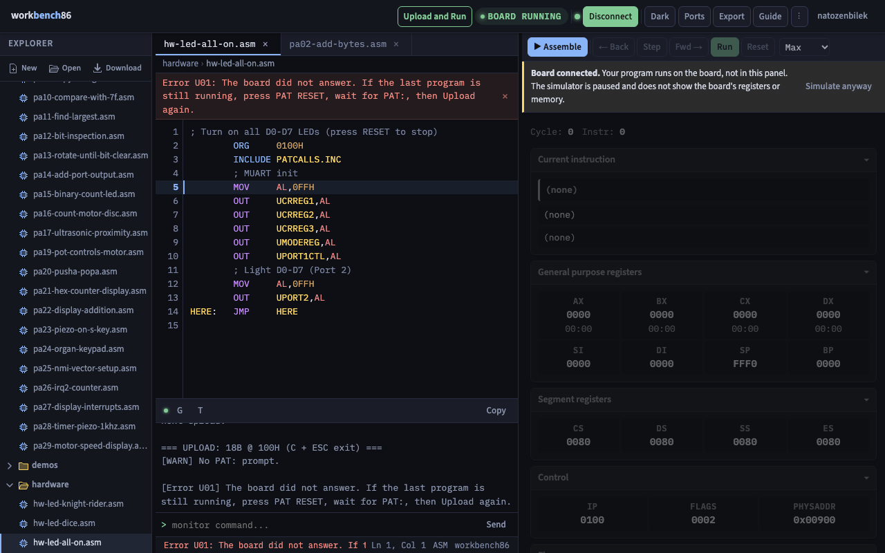
Error U01
While the old program runs, the board ignores Upload.
PAT RESET before every upload.
- 1error banner
- 2
[WARN] No PAT: prompt.and[Error U01] - 3BOARD RUNNING
Kart yeniden PAT:'ta
PAT RESET'ten sonra sayfa kartın PAT:'a döndüğünü yazar.
Yeni yükleme bundan sonra yapılır.
- 1
[OK] Board is back at PAT: - 2BOARD
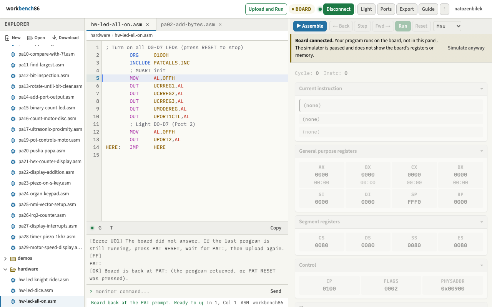
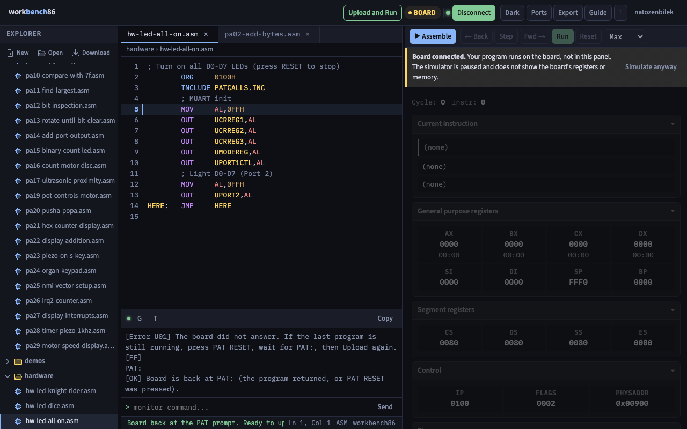
The board is back at PAT:
After PAT RESET, the page says the board is back at PAT:.
The next upload starts here.
- 1
[OK] Board is back at PAT: - 2BOARD
ERROR 30
ERROR 30 geçersiz bir komut demektir; çoğunlukla işlemci kod olmayan bir adrese gitmiştir.
TX: C 0080:xxxx adresi ORG ile aynı olmalı.
ERROR 30
ERROR 30 is an invalid opcode, most often from jumping to memory with no code.
TX: C 0080:xxxx must match your ORG.
Yeni sürümün işareti
ORG 0500H olan bir programda terminal TX: C 0080:0500 yazar.
Başka bir şey görülürse sayfa Ctrl+Shift+R ile yenilenir.
Checking the build
With ORG 0500H, the terminal shows TX: C 0080:0500.
Otherwise, reload with Ctrl+Shift+R.
4Kart modu ve hata kodları
Kart bağlıyken program kartta çalışır; sorunlar kodla bildirilir.
4Board mode and error codes
With the board connected, programs run there and problems come as codes.
Kart modu
Kart bağlıyken simülatör paneli kilitlenir; program artık kartta çalışır.
Panel kartın register'larını göstermez.
- 1Board connected şeridi
- 2Simulate anyway
- 3kilitli panel
Board mode
With the board connected, the simulator panel locks.
The panel does not show the board's registers.
- 1Board connected banner
- 2Simulate anyway
- 3locked panel
Durum etiketi
Üstteki etiket kartın o an ne yaptığını gösterir.
The status label
The label at the top shows what the board is doing right now.
Hata kodlarının harfleri
Koddaki harf, sorunun nerede olduğunu söyler.
Bu kodlar kartın kendi ERROR 30 satırıyla karışmaz.
The letters in error codes
The letter in a code tells you where the problem is.
These codes can't be mistaken for the board's own ERROR 30.
Warning W01
Hat bozulunca sayfa W01 yazar, dinlemeyi bırakmaz.
Hat cızırdayınca telefonu kapatmayız.
Gerçek çeviricilerde henüz denenmedi
Warning W01
W01 marks a line glitch; the page keeps listening.
Nobody hangs up over static.
Untested on real converters
En sık altı kod
U01 görülünce PAT RESET'e basılır, yeni PAT: beklenir.
| Kod | Ne oldu | Ne yapılır |
|---|---|---|
| U01 | Kart cevap vermedi | PAT RESET, yeni PAT:, tekrar Upload |
| A02 | Kod derlenmiyor | Assemble hatalarını düzeltin |
| C06 | Bağlı değil | Device'a basın |
| C01 | Port başka yerde açık | Öbür sekmeyi kapatın, Device |
| B01 | Kart ERROR yazdı | C adresine ve vektörlere bakın |
| W01 | Hatta bozulma | Tekrarlarsa kabloya bakın |
The six most common codes
On U01, press PAT RESET and wait for a fresh PAT:.
| Code | What happened | What to do |
|---|---|---|
| U01 | No answer from the board | PAT RESET, fresh PAT:, Upload again |
| A02 | Code does not assemble | Fix the Assemble errors |
| C06 | Not connected | Press Device |
| C01 | Port open elsewhere | Close the other tab, Device |
| B01 | Board printed ERROR | Check the C address and vectors |
| W01 | Glitch on the line | If it repeats, check the cable |
Bütün kodlar (1)
C kodları bağlantıyı, A kodları karta gitmeyen işi anlatır.
| Kod | Ne oldu | Ne yapılır |
|---|---|---|
| C01 | Port başka yerde açık | Öbür sekmeyi kapatın, Device |
| C02 | Port açık kalmış | Çeviriciyi çıkarıp takın, Device |
| C03 | Port açılamadı | Çeviriciyi çıkarıp takın, Device |
| C04 | Bağlantı koptu | Kabloya bakın, Device, PAT RESET |
| C05 | Porta yazılamadı | Disconnect, Device, PAT RESET |
| C06 | Bağlı değil | Device'a basın |
| C07 | Prolific sürücüsü açmadı | Eski sürücü ya da başka çevirici |
| A01 | Sekme .asm değil | Translate to ASM |
| A02 | Kod derlenmiyor | Assemble hatalarını düzeltin |
| A03 | Program boş | Bir program açın |
All codes (1)
C codes are about the connection, A codes about your code.
| Code | What happened | What to do |
|---|---|---|
| C01 | Port open elsewhere | Close the other tab, Device |
| C02 | Port left open | Replug the converter, Device |
| C03 | Port failed to open | Replug the converter, Device |
| C04 | Link lost | Check the cable, Device, PAT RESET |
| C05 | Write to the port failed | Disconnect, Device, PAT RESET |
| C06 | Not connected | Press Device |
| C07 | Prolific driver refused | Older driver or another adapter |
| A01 | Tab is not .asm | Translate to ASM |
| A02 | Code does not assemble | Fix the Assemble errors |
| A03 | Empty program | Open a program |
Bütün kodlar (2)
U kodları yüklemeyi, B kartı, W uyarıları anlatır.
| Kod | Ne oldu | Ne yapılır |
|---|---|---|
| U01 | Yeni PAT: gelmedi | PAT RESET, yeni PAT:, tekrar Upload |
| U02 | C komutuna cevap yok | PAT RESET, tekrar deneyin |
| U03 | Bloktan sonra PAT: yok | PAT RESET, tekrar deneyin |
| U04 | Kart yazma modundan çıktı | PAT RESET, tekrar Upload |
| U05 | Bağlantı kapandı | Device, tekrar Upload |
| U06 | Başka bir iş sürüyor | Bitmesini bekleyin |
| U09 | Beklenmeyen durum | GitHub'da issue (hata kaydı) açın |
| B01 | Kart ERROR yazdı | C adresine ve vektörlere bakın |
| W01 | Hatta bozulma | Tekrarlarsa kabloya bakın |
| W02 | Bazı byte'lara cevap yok | PAT RESET, tekrar Upload |
| W03 | Prolific çipli çevirici (Windows) | C07 gelirse rehberdeki adımlar |
All codes (2)
U codes cover the upload, B the board, W the warnings.
| Code | What happened | What to do |
|---|---|---|
| U01 | No fresh PAT: | PAT RESET, fresh PAT:, Upload again |
| U02 | No reply to C | PAT RESET, try again |
| U03 | No PAT: after a block | PAT RESET, try again |
| U04 | Board left write mode | PAT RESET, Upload again |
| U05 | Link closed | Device, Upload again |
| U06 | Another job running | Wait for it to finish |
| U09 | Unexpected state | Open a GitHub issue |
| B01 | Board printed ERROR | Check the C address and vectors |
| W01 | Glitch on the line | If it repeats, check the cable |
| W02 | Some bytes got no reply | PAT RESET, Upload again |
| W03 | Prolific adapter (Windows) | If C07 follows, see the guide |
Hata bildirimi
Hata çıkarsa hata kodunu ve Copy kaydını ekleyip GitHub'da bir issue açın.
github.com/natozenbilek/workbench86/issues
- 1hata şeridi
- 2Copy
Reporting a problem
On an error, open a GitHub issue with the error code and the Copy log.
github.com/natozenbilek/workbench86/issues
- 1error banner
- 2Copy
5Önce simülatör, sonra kart
Kodu kart olmadan simülatörde ayıklarsınız, kartın başına geçince yüklersiniz.
5Simulator first, then the board
Debug in the simulator without a board; upload once you are at one.
Kart yokken ve kart varken
Kartın girişlerini kullanmayan bir program baştan sona simülatörde yazılıp denenir.
Gerisi simülatörde ayıklanır, kart başında yüklenir.
Without a board and at a board
Programs that don't use the board's inputs are done start to finish in the simulator.
Debug the rest there; upload at a board.
Karta ilk bağlanışta dört kısa kontrol
Dördü de geçerse kart, çevirici ve sayfa birlikte çalışıyor demektir.
Four quick checks on your first connection
If all four pass, the board, the converter and the page work together.
Artık neler yapabiliyorsunuz
- Kodu simülatörde Step ve Back ile ayıklamak
- Kartı Device ile bağlayıp PAT RESET'le hazırlamak
- Terminaldeki
TX:,PAT:ve SUCCESS satırlarını okumak 0080:0100'ü fiziksel adrese çevirmek- 9600 8N2'nin ne demek olduğunu anlatmak
- Hata kodundan sorunun yerini bulmak
Her yüklemeden önce PAT RESET.
What you can do now
- Debug code in the simulator with Step and Back
- Connect the board with Device and get it ready with PAT RESET
- Read the
TX:,PAT:and SUCCESS lines in the terminal - Turn
0080:0100into a physical address - Explain what 9600 8N2 means
- Tell from an error code where the problem is
PAT RESET before every upload.